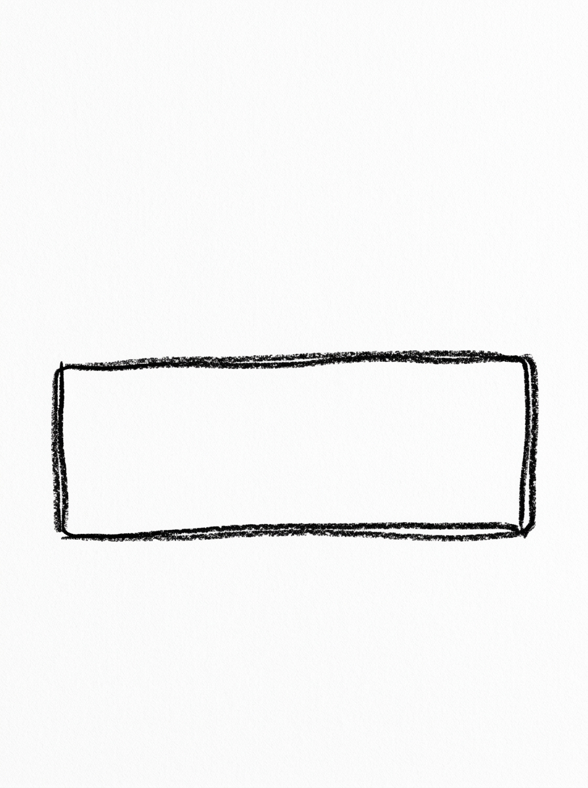
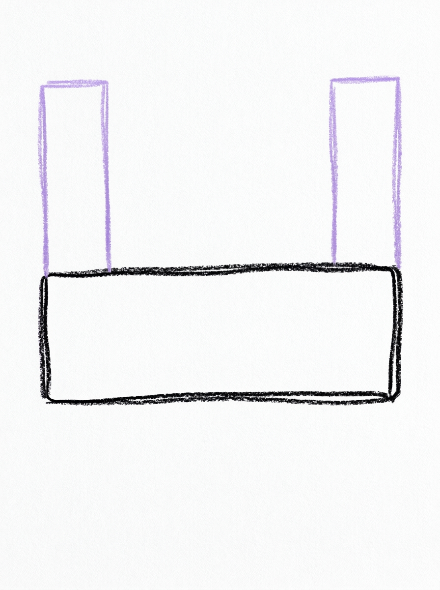
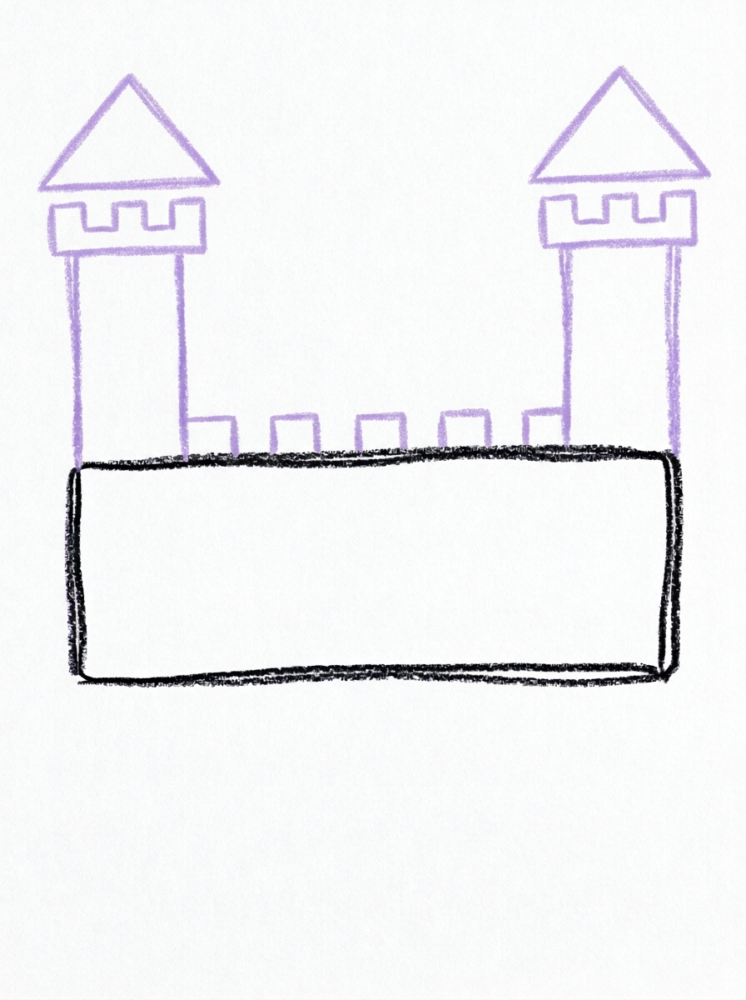
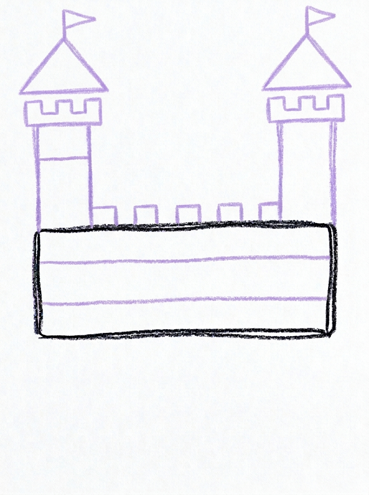
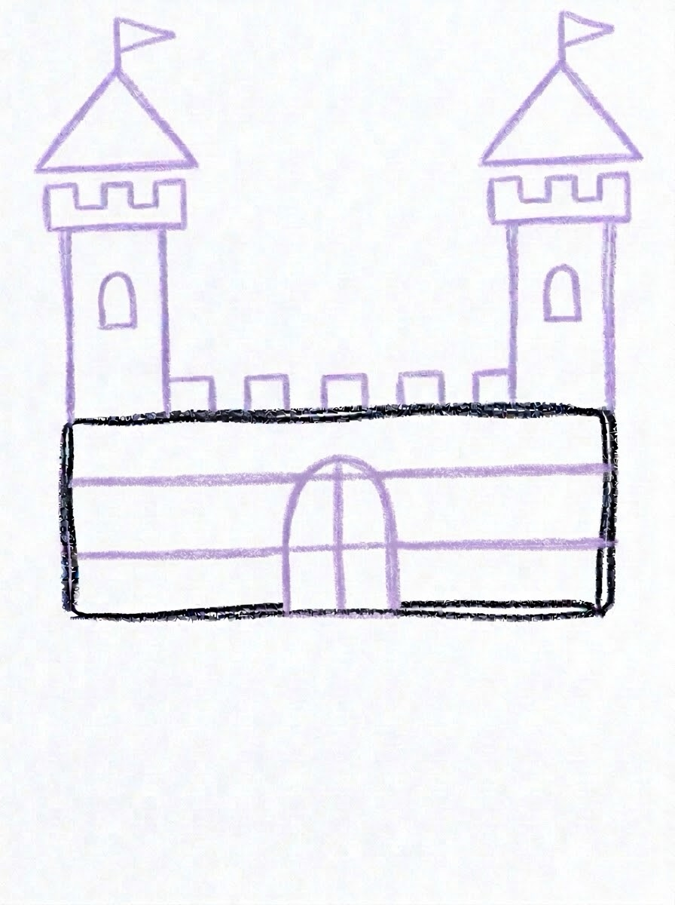
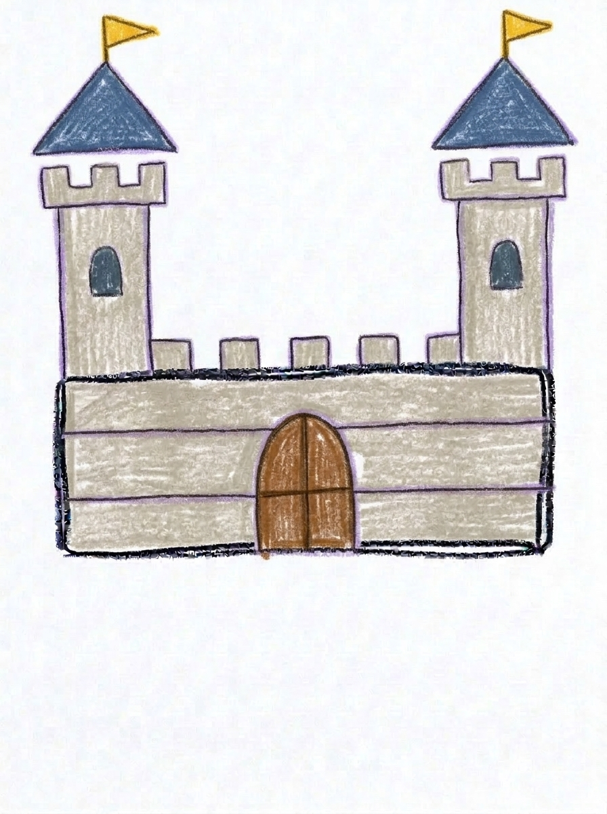

Castle Drawing for Kids How to Draw A Castle in 6 Easy Steps
Quick Answer
Draw a castle in six easy steps: start with one rectangle wall, stand a tall tower at each side, top each tower with a pointed triangle roof, add three square blocks, draw one arched door in the center, then color it grey and red. Made for ages 3 and up — no signup needed, just print and draw.
At a Glance
- Subject: How to draw a castle
- Ages: 3+
- Steps: 6 steps
- Time: ~15 min
- Difficulty: Easy
- Supplies: Paper, crayons
Every kid who has heard a fairy tale wants to draw the castle from it, and this one is built entirely from shapes beginners already own: rectangles, triangles, and squares. A wide wall, two tall towers, pointy roofs, and one arched door in the middle — six steps and the kingdom is ready for a dragon.
✏️ Draw Your Castle in 6 Easy Steps
One step per box — this step by step castle drawing shows each new part in a different color so kids can see exactly what changed.
Step 1: The Main Wall

Draw one wide rectangle with a flat top and a flat bottom. This is your castle's main wall.
Step 2: The Two Towers

Draw two tall narrow rectangles, one standing at the left side and one at the right side of the main wall, rising well above the wall's top. These are the towers.
Step 3: The Roofs

Draw one pointed triangle roof on top of each tower, a little wider than the tower.
Step 4: The Blocks

Draw a row of three small square blocks along the top of the main wall, spaced evenly.
Step 5: The Door

Draw one arched door in the center of the main wall — a tall shape with a rounded top and a flat bottom, sitting on the wall's bottom edge.
Step 6: Color It In

Color your castle! Light stone grey for the main wall and the towers, red for the two roofs, mid grey for the three blocks, and dark brown for the door. Great drawing!
📊 Castle Drawing by Age
Every age can join in — just adjust the job.
| Age | What they can do | Tip |
|---|---|---|
| 3-4 | Draw the wide wall rectangle and color the castle at the end. | Rectangles are the whole game here — a ruler or the edge of a book makes a great straight-line helper. |
| 4-5 | Add the two towers and their triangle roofs, one on each side. | Have them check the towers match: same side, same height, one roof each — symmetry is the lesson. |
| 6+ | Complete all six steps, including the three spaced blocks and the centered arched door. | Let them add flags on the roofs and a window in each tower once the core castle is solid. |
🖨️ Download Your Free Castle Drawing Printable
The printable lays out all 6 steps one per box, big enough for little hands — kids draw right alongside each step.
⬇️ Open Free Printable 🖨️ Print🎁 Free printable for ages 3+
🏰 Draw a Whole Kingdom
One castle is a start — a kingdom is a picture. Keep the castle in the middle and build out around it: a curving path from the door, round-topped trees on both sides, a river with a little bridge in front, and a friendly dragon or a knight standing guard. Kids who want more can add flags flying from the roofs and a window in each tower, then name the kingdom and write its name on a banner over the door.
What You'll Need to Draw A Castle
You only need a pencil, an eraser, and the printed tutorial page with all six steps; a ruler or straight edge is a helpful extra for the wall and towers. For coloring, light stone grey and mid grey make the castle walls, red covers the two roofs, and dark brown finishes the door.
What They're Learning
This tutorial is a geometry lesson in disguise: wide and tall rectangles for the wall and towers, triangles for the roofs, squares for the blocks along the top, and a rectangle with a rounded top for the arched door. It also teaches symmetry in a way kids can see — a tower on each side, a roof on each tower, and the door placed in the center of the wall.
Make It Yours
Add a flag on each roof and a window in each tower to complete the storybook look, or draw a moat with wavy water and a drawbridge instead of a plain door. Kids can build a taller castle with three towers, a sandcastle version at the beach with shell details, or a night castle in dark blue with yellow windows and a crescent moon.
🛒 Our Favorite Drawing Supplies
These are the supplies we reach for in our own home — washable (because kids), quality paper, and enough colors to avoid fights.
As an Amazon Associate, MomYouNeedThis earns from qualifying purchases — at no extra cost to you.
💡 Castle Drawing Tips for Parents
The towers in step two make the castle: they should stand right at the left and right sides of the main wall, flush with its corners, and rise well above the wall's top. Towers that float in the middle of the wall or stop at the wall's height are the main reason a castle drawing reads as a plain house, so check placement before the roofs go on.
The door in step five belongs in the exact center of the wall, sitting on the bottom edge, with its rounded top giving it that castle arch. A helpful trick is to fold the paper in half lightly, or mark the wall's middle with a tiny dot, before drawing the door — centering it keeps the whole castle balanced.
✏️ Castle Drawing Step by Step
A step by step castle drawing works because a castle is really just stacked geometry. One wide rectangle becomes the wall, two tall rectangles become towers, and two triangles become roofs — shapes a child can already draw, arranged in an order that builds up instead of sideways.
Building the shell first and the details last keeps the drawing balanced. The blocks along the top and the arched door only land in the right places because the wall and towers are already standing when they arrive.
After each step, a quick symmetry check — does the left side match the right side? — catches small problems while they are still one shape to fix, and quietly teaches kids to review their own work.
See free castle printable for more.
✏️ One Shape Per Step, Six Steps Total
Step one is the main wall: one wide rectangle with a flat top and a flat bottom. Step two stands the towers — two tall narrow rectangles, one at the left side and one at the right side of the wall, rising well above its top.
Step three adds one pointed triangle roof on top of each tower, a little wider than the tower itself. Step four draws a row of three small square blocks along the top of the main wall, spaced evenly between the towers.
Step five draws the door: one tall arch in the center of the wall, rounded at the top and flat at the bottom, sitting on the wall's bottom edge. Step six colors the wall and towers light stone grey, the roofs red, the blocks mid grey, and the door dark brown.
See free castle printable for more.
🏰 Draw a Whole Kingdom
A castle alone on a page invites the obvious next question: what is around it? Extending the drawing into a kingdom gives kids a reason to reuse every shape they just learned in new places.
The path from the door is two curving lines, the trees are circles on sticks, the river is two long wavy lines with a rectangle bridge, and hills are big bumps along the horizon. Nothing new is hard — the scene is built from the same beginner shapes as the castle.
Naming the kingdom and its ruler turns the picture into a story starter. Many kids end up drawing the king, queen, or dragon who lives there next — which is exactly how a six-step tutorial grows into an afternoon of drawing.
See free castle printable for more.
❓ Castle Drawing FAQs
What is the easiest way to draw a castle for kids?
Draw one wide rectangle for the wall, stand a tall rectangle tower at each side, put a pointed triangle roof on each tower, add three square blocks along the top, and finish with one arched door in the center.
What age is this castle drawing for?
It is made for ages 3 and up. Younger kids can draw the wall and color, while older kids can manage the towers, roofs, blocks, and centered door themselves.
What supplies do we need?
Just a pencil, an eraser, and crayons or markers — greys for the stone, red for the roofs, and dark brown for the door. A ruler helps with the straight lines.
Is the printable really free?
Yes — every printable on MomYouNeedThis is 100% free to download and print. No signup, no payment, just tap the download button.
How do I print the castle tutorial?
Print at 100% scale, not 'fit to page', so the step pictures stay their true size. Regular letter paper works perfectly.
How do we keep the two towers the same height?
Draw one tower, then start the second at the same height by lightly marking its top with a dot at the same level as the first tower's top. Matching sides are what make it read as a castle.
Where should the towers go — on the wall or at its sides?
Right at the sides, flush with the wall's corners, rising well above the wall's top. Towers tucked inside the wall's edges make the building look like a house instead.
Can we add flags and windows?
Yes — once the six steps are done, a small triangle flag on each roof and a little window in each tower are perfect finishing touches, and they are part of the kingdom challenge on this page.
📚 Keep Exploring
- ✏️ All 53 Drawing Tutorials 53 free step-by-step drawing tutorials for kids.
- 🎀 Cute Coloring Free cute coloring pages for kids.
- ✏️ Drawing Practice Free printable drawing pre-writing worksheet for toddlers.